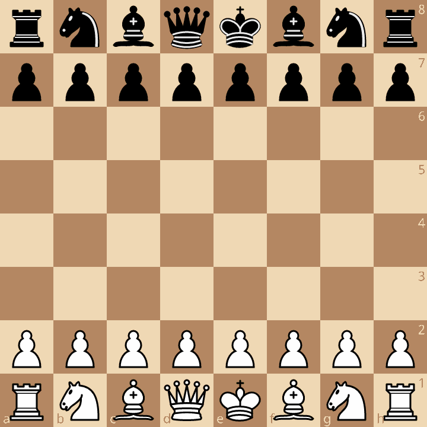
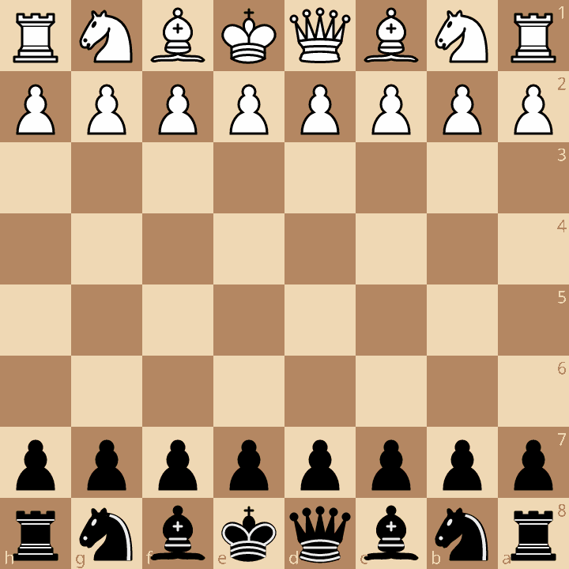
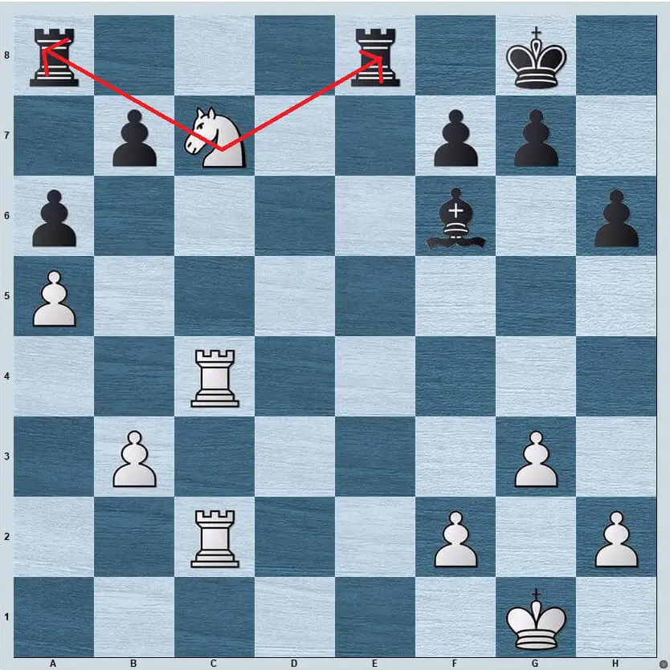
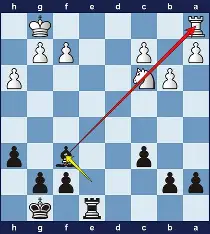
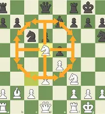
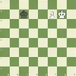
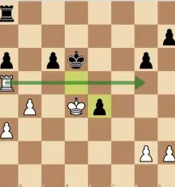

Learn how each chess piece moves — from pawns to kings — and understand the foundation of gameplay.
Learn more
Basic Movements
Close
♟️ Pawns
VIDEO
Pawns move forward one square, with the option to move two squares on their first move.
They capture diagonally.
Pawns are worth 1 point of material until they cross over the enemy base.
Next
♖ Rooks Close
VIDEO
Rooks move horizontally or vertically across any number of squares.
Rooks cannot move when blocked by other pieces whether horizontally or vertically.
They are worth 5 points of material.
Next
♘ Knights Close
VIDEO
Knights move in an L-shape: two squares in one direction, then one square perpendicular.
They are the only pieces that can jump over others.
Knights are worth 3 points of material.
Next
♗ Bishops Close
VIDEO
Bishops move diagonally across any number of squares.
Each bishop stays on its starting color (light or dark squares).
Bishops are worth 3 points of material.
Next
♕ Queens Close
VIDEO
The queen combines the power of the rook and bishop.
She can move horizontally, vertically, or diagonally across any number of squares.
The queen is the most powerful piece, worth 9 points of material.
Next
♔ Kings Close
VIDEO
The king moves one square in any direction.
Protecting the king is the ultimate goal of the game.
The king is invaluable — if checkmated, the game ends.
Finish

Explore unique chess mechanics like castling, en passant, and pawn promotion that add depth to the
game.
Learn more
📖Opening Principles
close
Control the Center
Key squares: e4, d4, e5, d5.
Use pawns (e.g., 1.e4 or 1.d4) and minor pieces (knights, bishops) to claim influence.
Controlling the center gives your pieces more mobility and restricts your opponent.
Develop Your Pieces Quickly
Bring knights and bishops into play early.
Avoid moving the same piece multiple times unless necessary.
Knights are often developed before bishops.
Castle Early
Castling protects your king and connects your rooks.
Aim to castle within the first 5–10 moves.
Don’t Move the Queen Too Soon
The queen is powerful but vulnerable if developed too early.
Wait until your minor pieces are developed before bringing her out.
Connect Your Rooks
Clear the back rank by developing minor pieces.
Rooks are strongest when they support each other and control open files.
Avoid Unnecessary Pawn Moves
Don’t push too many pawns early; they can become weaknesses.
Each pawn move should support piece development or central control.
Develop Towards the Center
Place knights on c3/f3 (or c6/f6 for Black) rather than the edge.
“Knights on the rim are dim” — they control fewer squares.
Coordinate Your Pieces
Aim for harmony: pieces should support each other and work toward common goals.
Avoid scattering them without a plan.
Video explanation:
VIDEO
Next
Ruy Lopez (Spanish Game)
Close

History: Named after 16th‑century Spanish priest Ruy López de Segura, one of the
earliest chess
theoreticians. It has been a cornerstone of opening theory for centuries.
Idea: White pressures Black’s knight on c6 after developing the bishop to b5, aiming
to control
the center and prepare for kingside castling.
Notation: 1. e4 e5 2. Nf3 Nc6 3. Bb5
Next
Italian Game
Close
History: Originating in the 16th century, popularized by Italian masters like Greco.
It remains
one of the oldest and most classical openings.
Idea: White develops quickly with bishop to c4, targeting Black’s vulnerable f7
square and
preparing for rapid kingside play.
Notation: 1. e4 e5 2. Nf3 Nc6 3. Bc4
Next
French Defense
Close

History: First recorded in correspondence games between London and Paris in 1834,
hence the
name. It became a major defensive weapon for Black.
Idea: Black responds to 1.e4 with 1...e6, aiming to counterattack the center with
d5. It often
leads to solid but somewhat cramped positions.
Notation: 1. e4 e6 2. d4 d5
Next
Queen’s Gambit
Close
History: Documented as early as the 15th century, but popularized in modern times by
world
champions like Capablanca and Kasparov. It’s one of the most respected openings for White.
Idea: White offers a pawn on c4 to divert Black’s d5 pawn, aiming for long‑term
central control
and space advantage.
Notation: 1. d4 d5 2. c4
Next
Sicilian Defense
Close
History: First analyzed in the 16th century by Italian priest Pietro Carrera, later
refined by
modern masters. It’s the most popular response to 1.e4 at the highest levels.
Idea: Black plays 1...c5 to immediately contest the center from the flank, creating
asymmetrical
positions and dynamic counterplay.
Notation: 1. e4 c5
Finish
Understand how to protect your king, recognize threats, and deliver checkmate with strategic
precision.
Learn more
Forks Close

History: Forks are one of the oldest tactical motifs, recognized since early chess
manuals.
Idea: A single piece attacks two or more enemy pieces at once, forcing material
gain.
Notation Example: Nf7+ (knight forks king and rook).
Next
Pins Close

History: Documented in 18th‑century play, pins remain one of the most common
tactical motifs.
Idea: A piece cannot move without exposing a more valuable piece behind it.
Notation Example: Bb5 (bishop pins knight to king).
Next
Outposts Close

History: A strategic concept emphasized by Nimzowitsch in “My System.”
Idea: Secure squares (often protected by pawns) where knights or bishops dominate.
Notation Example: Nd5 (knight occupies central outpost).
Finish

Mastering the endgame is essential for converting advantages into victory. Learn how to promote
pawns, coordinate your
king and rook, and apply key techniques like opposition and zugzwang to outmaneuver your opponent
when few pieces
remain.
Learn more
Pawn Promotion Close

History: Pawn promotion has been part of chess since its earliest forms, symbolizing
the growth
of the weakest piece into the strongest.
Idea: When a pawn reaches the opposite side of the board, it can be promoted to a
queen, rook,
bishop, or knight — usually a queen.
Notation Example: e8=Q (pawn promotes to queen).
Next
Opposition Close
History: Opposition is a classic king maneuver studied in endgame theory for
centuries.
Idea: One king directly faces the other with a single square between them,
controlling the key
squares and forcing the opponent back.
Notation Example: Kd4 vs Kd6 (White king takes the opposition).
Next
Rook Activity Close

History: Rook endgames are the most common type of endgame, deeply analyzed by
masters like
Capablanca.
Idea: An active rook behind passed pawns or on open files is far stronger than a
passive rook.
Notation Example: Rb8 (rook moves behind the pawn to support promotion).
Finish
Featured Lesson
How to Checkmate with a Queen and King
Step-by-step guide with diagrams.
Start
Lesson
How to en Passant
Step-by-step guide with diagrams Start Lesson